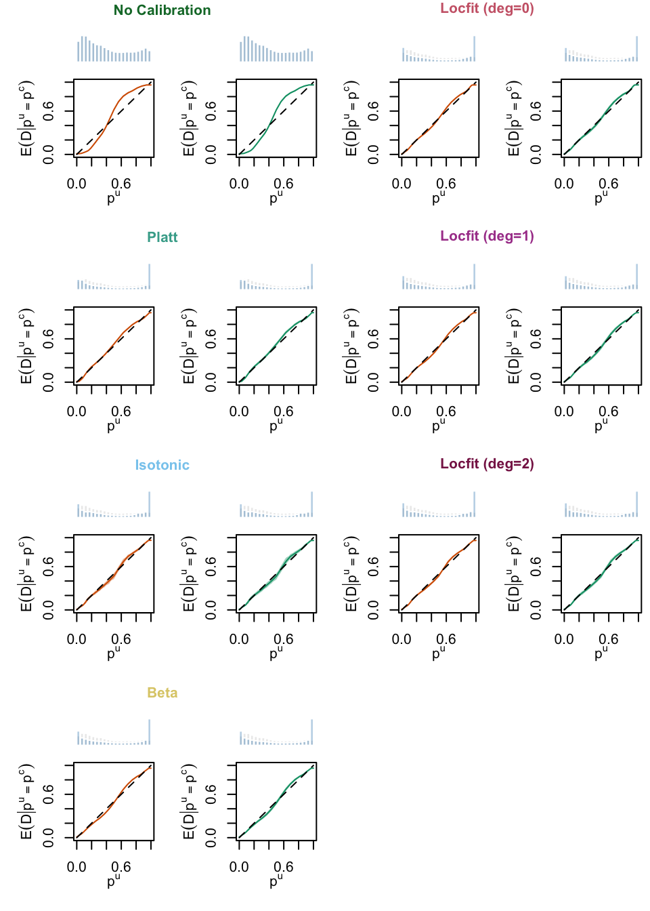

── Attaching core tidyverse packages ──────────────────────── tidyverse 2.0.0 ──
✔ dplyr 1.1.4 ✔ readr 2.1.4
✔ forcats 1.0.0 ✔ stringr 1.5.0
✔ ggplot2 3.4.4 ✔ tibble 3.2.1
✔ lubridate 1.9.3 ✔ tidyr 1.3.0
✔ purrr 1.0.2
── Conflicts ────────────────────────────────────────── tidyverse_conflicts() ──
✖ dplyr::filter() masks stats::filter()
✖ dplyr::lag() masks stats::lag()
ℹ Use the conflicted package (<http://conflicted.r-lib.org/>) to force all conflicts to become errors
library(randomForest)
randomForest 4.7-1.1
Type rfNews() to see new features/changes/bug fixes.
Attaching package: 'randomForest'
The following object is masked from 'package:dplyr':
combine
The following object is masked from 'package:ggplot2':
margin
library(future)library(binom)library(locfit)
locfit 1.5-9.8 2023-06-11
Attaching package: 'locfit'
The following object is masked from 'package:purrr':
none
library(pROC)
Type 'citation("pROC")' for a citation.
Attaching package: 'pROC'
The following objects are masked from 'package:stats':
cov, smooth, var
In Chapter 7, we trained 200 random forest classifiers and 200 random forest regressors. Each replication corresponded to a different split of the data into a calibration and a test set. Note that the forests were all estimated on the same training test.
In this chapter, we present the calibration and goodness-of-fit metrics computed during the simulations.
# A tibble: 5,600 × 17
sample model mse accuracy missclass_rate sensitivity specificity threshold
<fct> <fct> <lgl> <dbl> <dbl> <dbl> <dbl> <dbl>
1 Calibr… Regr… NA 0.852 0.148 0.758 0.923 0.5
2 Test Regr… NA 0.852 0.148 0.755 0.923 0.5
3 Calibr… Regr… NA 0.860 0.140 0.804 0.902 0.5
4 Calibr… Regr… NA 0.861 0.139 0.812 0.897 0.5
5 Calibr… Regr… NA 0.860 0.140 0.825 0.887 0.5
6 Calibr… Regr… NA 0.860 0.140 0.813 0.895 0.5
7 Calibr… Regr… NA 0.860 0.140 0.822 0.890 0.5
8 Calibr… Regr… NA 0.860 0.140 0.818 0.892 0.5
9 Test Regr… NA 0.857 0.143 0.794 0.903 0.5
10 Test Regr… NA 0.858 0.142 0.803 0.899 0.5
# ℹ 5,590 more rows
# ℹ 9 more variables: FPR <dbl>, AUC <dbl>, locfit_score <dbl>, brier <dbl>,
# ece <dbl>, qmse <dbl>, wmse <dbl>, seed <int>, method <fct>
8.3 Boxplots
Let us define two functions to display the goodness-of-fit metrics (boxplot_metrics_gof()) and the calibration metrics (boxplot_metrics_calib()) in boxplots.
Figure 8.1: Goodness-of-fit Metrics Computed on 200 Replications, for the Regression Random Forest (top) and for the Classification Random Forest (bottom), on the Calibration (transparent colors) and on the Test Set (full colors). A probability threshold of \(\tau=0.5\) was used to compute the sensivity and the specificity.
boxplot_metrics_calib(metrics_rf)
Figure 8.2: Calibration Metrics Computed on 200 Replications, for the Regression Random Forest (top) and for the Classification Random Forest (bottom), on the Calibration (transparent colors) and on the Test Set (full colors).
We create a function to plot the calibration metrics vs goodness of fit metrics. Each point represent the result obtained in a simulation, computed either in the train set or in the test set.
Figure 8.3: LCS vs. AUC for Random Forest Regression (left) and Random Forest Classification (right). Each point represents an estimation obtained from a set of hyperparameters. The gray lines help identify the estimations made within each sample using the same model.
Figure 8.4: Brier Score vs. AUC for Random Forest Regression (left) and Random Forest Classification (right). Each point represents an estimation obtained from a set of hyperparameters. The gray lines help identify the estimations made within each sample using the same model.
Figure 8.5: Expected Calibration Error vs. AUC for Random Forest Regression (left) and Random Forest Classification (right). Each point represents an estimation obtained from a set of hyperparameters. The gray lines help identify the estimations made within each sample using the same model.
8.5 Calibration Curves
Let us extract the calibration curves computed in Chapter 7.
Now, we will partition the [0,1] segment into equal-sized bins. In each bin, we will compute the number of observations with scores falling into that bin, for each sample of each simulation (and each recalibration technique).
8.5.0.1 Helper Functions
First, the count_scores() function, which counts the number of observations in each bin, for a vector of scores.
#' For a vector of scores, compute the number of obs in each bin#' The bins are defined on evenly separated values in [0,1]#' count_scores <-function(scores) { breaks <-seq(0, 1, by = .05)if (!is.null(scores)) { n_bins <-table(cut(scores, breaks = breaks)) } else { n_bins <-NA_integer_ }tibble(bins =names(table(cut(breaks, breaks = breaks))),n_bins =as.vector(n_bins) )}
Then, another function, count_scores_simul(), applies count_scores() to all the non-recalibrated scores in the simulations.
#' Applies the count_scores() function to a list of simulations#' count_scores_simul <-function(scores_simul) {map(scores_simul, count_scores) |>list_rbind() |>group_by(bins) |>summarise(n_bins =mean(n_bins) )}
Lastly, the count_scores_simul_method() function does the same for the all the recalibrated scores.
#' Extract the recalibrated scores from a list of simulations and computes#' the number of scores in bins (see count_scores())#' For each simulation, there are multiple correction techniques#' count_scores_simul_method <-function(scores_simul_methods) {map(scores_simul_methods, "scores_c") |>map(.f =function(simul){map( simul, .f =function(sim_method) {count_scores_simul(sim_method$tb_score_c_train) |>mutate(sample ="train") |>bind_rows(count_scores_simul(sim_method$tb_score_c_calib) |>mutate(sample ="calibration") ) |>bind_rows(count_scores_simul(sim_method$tb_score_c_test) |>mutate(sample ="test") ) } ) |>list_rbind(names_to ="method") },.progress =TRUE ) |>list_rbind() |>group_by(method, sample, bins) |>summarise(n_bins =mean(n_bins),.groups ="drop" )}
The plot_calib_locfit_simuls() allows us to visualize the calibration curves (on the train set and on the test set) for a type of forests (regression or classification), for uncalibrated scores and recalibrated ones.
plot_calib_locfit_simuls <-function(calib_curve, type) { tb_calib_curve <- calib_curves |>filter(type ==!!type) tb_n_bins <- n_bins |>filter(type ==!!type) nb_methods <- tb_calib_curve$method |>unique() |>length() mat_init <-c(1, 1, 2, 4, 3, 5) |>matrix(ncol =2, byrow =TRUE) mat <- mat_initfor (j in2:(ceiling(nb_methods/2))) { mat <-rbind(mat, mat_init + (5*(j-1))) } mat <-cbind(mat, mat +max(mat))layout(mat, height =rep(c(.35, 1, 3), nb_methods)) y_lim <-c(0, 1) samples <-c("Calibration", "Test")for (i_method in1:length(methods)) { method <- methods_labs[i_method]# Title for the modelspar(mar =c(0, 0.5, 0, 0.5))plot(0:1, 0:1,col =NULL,type="n",xlim =c(0,2), ylim =0:1,xlab ="",ylab ="",main ="",xaxt ="n",yaxt ="n",new =TRUE,frame.plot =FALSE )# Get the center coordinates of the plot plot_center <-c(mean(par("usr")[1:2]), mean(par("usr")[3:4]))# Get the width and height of the text text_dim <-strwidth(method, cex =1.2, font =2)# Calculate the coordinates to center the text text_x <- plot_center[1] - text_dim /2 text_y <- plot_center[2]# Add text to the plot at the centered coordinatestext(1, text_y, method, col = colours_calib[i_method],cex =1, font =2 )for(i_sample in1:length(samples)) { sample <- samples[i_sample] tb_plot <- tb_calib_curve |>filter( sample ==!!sample, method ==!!method, type ==!!type ) n_bins_current <- tb_n_bins |>filter( sample ==!!sample, method ==!!method, type ==!!type ) n_bins_no_calib_current <- tb_n_bins |>filter( sample ==!!sample, method =="No Calibration", type ==!!type )# Barplots on toppar(mar =c(0.5, 4.3, 1.0, 0.5)) y_lim_bp <-range(c(n_bins_no_calib_current$n_bins, n_bins_current$n_bins, na.rm =TRUE) )barplot( n_bins_no_calib_current$n_bins,col =adjustcolor("gray", alpha.f = .3),ylim = y_lim_bp,border ="white",axes =FALSE,xlab ="", ylab ="", main ="" )barplot( n_bins_current$n_bins,col =adjustcolor("#0072B2", alpha.f = .3),ylim = y_lim_bp,border ="white",axes =FALSE,xlab ="", ylab ="", main ="",add =TRUE )# Calib curvepar(mar =c(4.1, 4.3, 0.5, 0.5), mgp =c(2, 1, 0))plot( tb_plot$xlim, tb_plot$mean,type ="l", col = colours_samples[sample],xlim =0:1, ylim =0:1,xlab = latex2exp::TeX("$p^u$"), ylab = latex2exp::TeX("$E(D | p^u = p^c)$"),main ="" )polygon(c(tb_plot$xlim, rev(tb_plot$xlim)),c(tb_plot$lower, rev(tb_plot$upper)),col =adjustcolor(col = colours_samples[sample], alpha.f = .4),border =NA )segments(0, 0, 1, 1, col ="black", lty =2) } }}
plot_calib_locfit_simuls(calib_curve = calib_curves, type ="Regression")
Figure 8.6: Calibration Curves Obtained with Local Regression, for the Regression Random Forest, for the Calibration Set and for the Test Set. The curves are the averages values obtained on 200 different splits of the calibration and test datasets, and the color bands are the 95% bootstrap confidence intervals. The histogram on top of each graph show the distribution of the uncalibrated scores, and that of the calibrated scores.

plot_calib_locfit_simuls(calib_curve = calib_curves, type ="Classification")
Figure 8.7: Calibration Curves Obtained with Local Regression, for the Classification Random Forest, for the Calibration Set and for the Test Set. The curves are the averages values obtained on 200 different splits of the calibration and test datasets, and the color bands are the 95% bootstrap confidence intervals. The histogram on top of each graph show the distribution of the uncalibrated scores, and that of the calibrated scores.